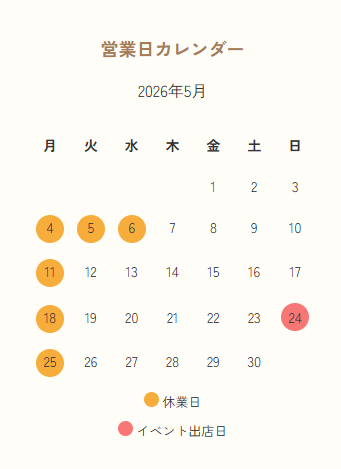
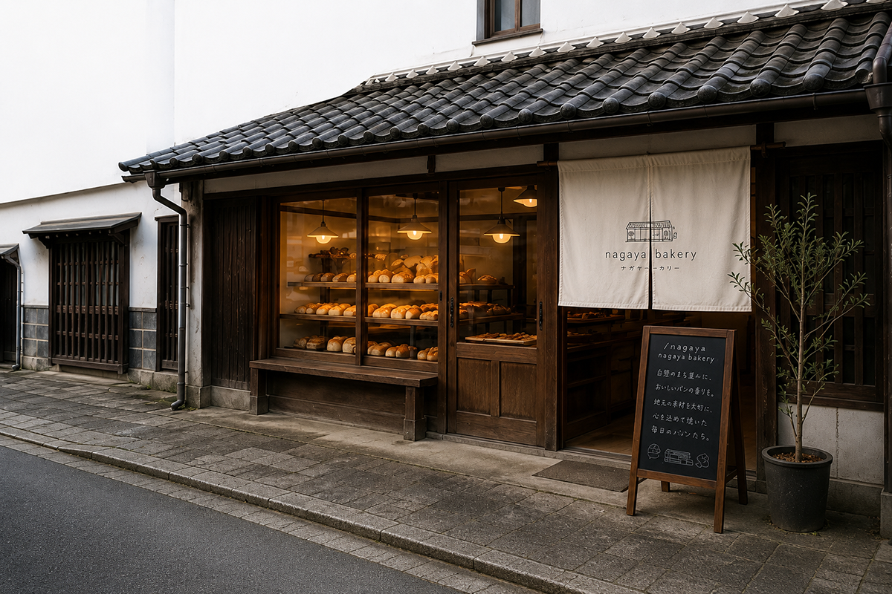
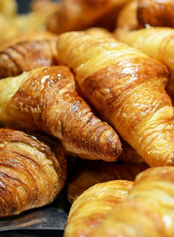
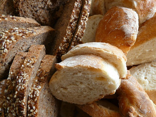
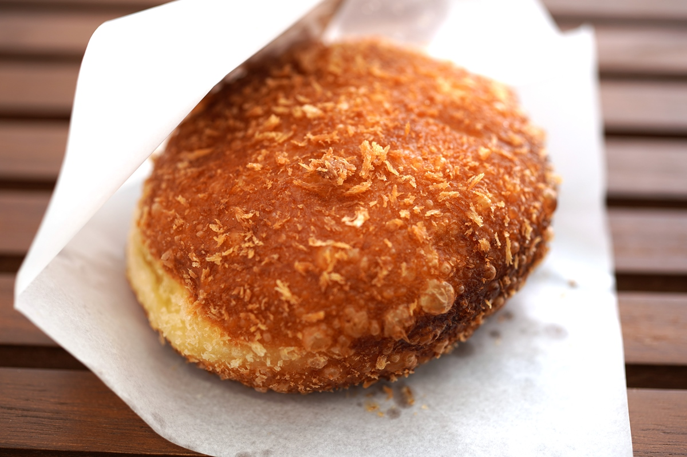
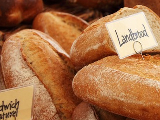

お知らせ
- 2026.05.26
- 6月の営業カレンダーのお知らせ
- 2026.05.25
- 6月13・14日「やまぐちフラワーランド あじさい祭り」にてイベント出店決定！
- 2026.05.01
- 季節限定「夏みかんぱん」はじまりました！
- 2026.04.22
- 5月24日「道の駅 里の厨」にてイベント出店決定！
- 2026.04.20
- ゴールデンウィークの営業について
営業日カレンダー
休業日
イベント出店日
2026年5月
| 月 | 火 | 水 | 木 | 金 | 土 | 日 |
|---|---|---|---|---|---|---|
| 1 | 2 | 3 | ||||
| 4 | 5 | 6 | 7 | 8 | 9 | 10 |
| 11 | 12 | 13 | 14 | 15 | 16 | 17 |
| 18 | 19 | 20 | 21 | 22 | 23 | 24📍道の駅 里の厨 🕐9:00〜17:00 |
| 25 | 26 | 27 | 28 | 29 | 30 | 31 |
2026年6月
| 月 | 火 | 水 | 木 | 金 | 土 | 日 |
|---|---|---|---|---|---|---|
| 1 | 2 | 3 | 4 | 5 | 6 | 7 |
| 8 | 9 | 10 | 11 | 12 | 13📍やまぐちフラワーランド ☂️あじさい祭り 🕐9:00〜17:00 | 14📍やまぐちフラワーランド ☂️あじさい祭り 🕐9:00〜17:00 |
| 15 | 16 | 17 | 18 | 19 | 20 | 21 |
| 22 | 23 | 24 | 25 | 26 | 27 | 28 |
| 29 | 30 |
店舗情報
- 店名
- NAGAYA BAKERY - ナガヤベーカリー -
- 住所
- 山口県柳井市柳井津金屋459−1
- 営業時間
- 9:00〜19:00（売り切れ次第終了）
- 定休日
- 月曜・不定休
- 駐車場
- 近隣の市営駐車場をご利用ください。
- 電話番号
- 0820-25-0531
- 支払方法
- 現金・クレジットカード・電子マネー・QRコード決済
- アクセス
- JR柳井駅から徒歩10分 / バス停・白壁の町並み前から徒歩2分
パンの焼き上がり時間や、季節のパン、営業日など最新情報を発信しています♪
簡単なご質問もDMにてお気軽にお問合せ下さい。
@nagaya_bakery





